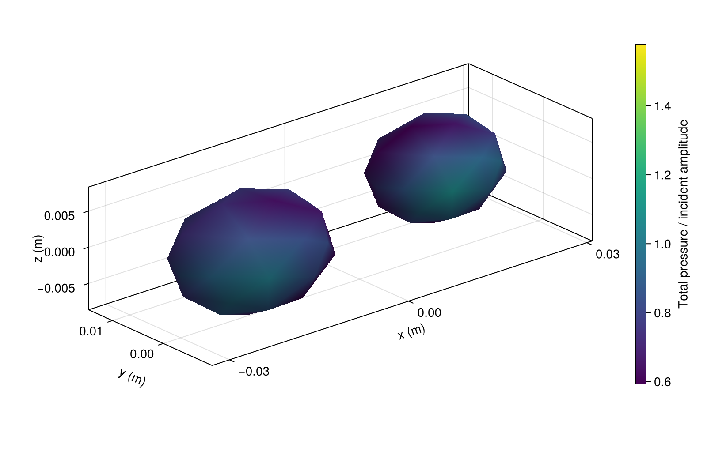
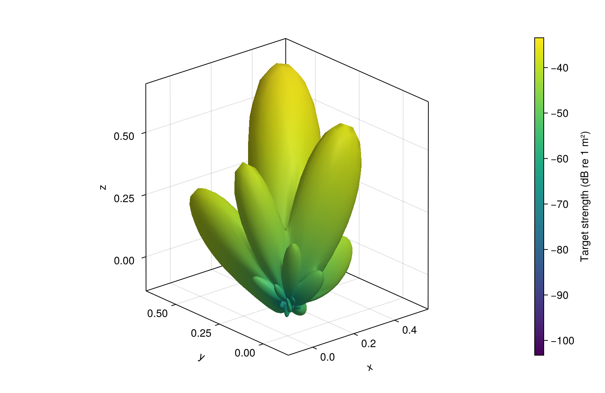

Interacting particles
Pressure on two particles
Two separated fluid particles scatter into each other. Both are exterior-facing regions (parents=[0, 0]). Color shows total surface pressure divided by incident amplitude.
using AcousticScattering
using CairoMakie: plot, save
surfaces = [
mesh(; semiaxes=(0.012, 0.009, 0.008), center=(-0.018, 0, 0), resolution=0.7, qorder=4),
mesh(; semiaxes=(0.010, 0.008, 0.007), center=(0.018, 0.006, 0), resolution=0.7, qorder=4)]
solution = bem(surfaces, [FluidFilled(1.4, 0.8), FluidFilled(1.8, 0.7)], 250.0;
parents=[0, 0], incidence_angle=pi / 3)
fig = plot(solution; kind=:surface_field, field=:pressure_magnitude, colormap=:viridis,
figure=(size=(800, 520), figure_padding=(70, 20, 55, 20)))
save("pair_pressure.png", fig)
Phase across a three-body cluster
Use three differently sized particles with oblique incidence. The returned solution includes multiple scattering among all three bodies.
using AcousticScattering
using CairoMakie: Axis3, Colorbar, plot, surface, save
surfaces = [
mesh(; semiaxes=(0.011, 0.008, 0.007), center=(-0.020, -0.012, 0), resolution=0.7, qorder=4),
mesh(; semiaxes=(0.010, 0.007, 0.006), center=(0.016, -0.010, 0.006), resolution=0.7, qorder=4),
mesh(; semiaxes=(0.009, 0.007, 0.006), center=(0, 0.020, -0.005), resolution=0.7, qorder=4)]
solution = bem(surfaces, fill(FluidFilled(1.5, 0.8), 3), 300.0;
parents=[0, 0, 0], incidence_angle=pi / 3, incidence_azimuth=pi / 4)
fig = plot(solution; kind=:surface_field, field=:pressure_phase,
colormap=:twilight, colorrange=(-pi, pi),
figure=(size=(800, 520), figure_padding=(70, 20, 55, 20)))
save("cluster_phase.png", fig)
The cluster's 3D scattering pattern
Reuse that solution for every observation direction. Radius is amplitude magnitude normalized by its maximum. Color is target strength. This is a directional pattern, not a physical surface. Backscatter is the direction opposite the incident wave.
pattern = bistatic_map(solution, range(0, pi; length=61), range(0, 2pi; length=121))
r = 10 .^ ((pattern.target_strength .- maximum(pattern.target_strength)) ./ 20)
x = r .* cos.(pattern.thetas)
y = r .* sin.(pattern.thetas) .* cos.(pattern.phis')
z = r .* sin.(pattern.thetas) .* sin.(pattern.phis')
fig = surface(x, y, z; color=pattern.target_strength, colormap=:viridis,
figure=(size=(800, 520), figure_padding=(70, 20, 20, 20)),
axis=(type=Axis3, aspect=:data, xlabel="x", ylabel="y", zlabel="z"))
Colorbar(fig.figure[1, 2], fig.plot; label="Target strength (dB re 1 m²)")
save("cluster_radiation.png", fig)
Mesh settings are compact visualization choices. Refine meshes and quadrature before using these values quantitatively.